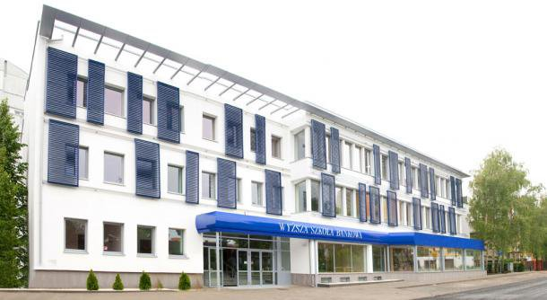
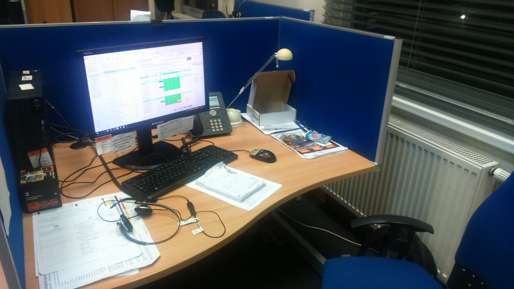
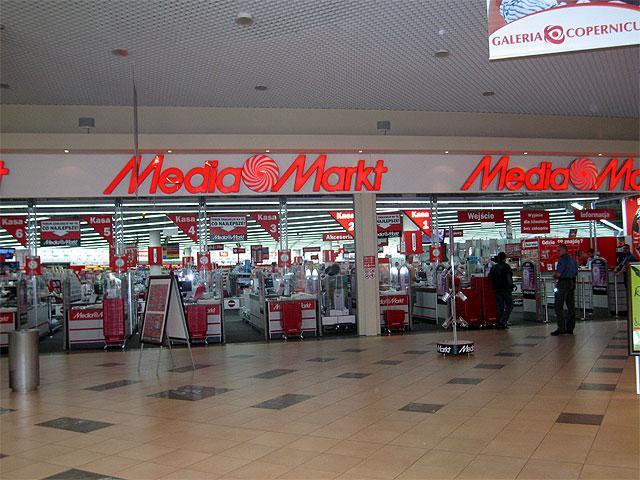

 Po ukończeniu studiów na Wyższej Szkole Bankowej, rozpocząłem swoją karierę zawodową na infolinii, gdzie zdobyłem cenne doświadczenie w bezpośrednim kontakcie z klientami. Moja praca polegała na rozwiązywaniu różnorodnych problemów technicznych, głównie związanych z komputerami i oprogramowaniem. Dzięki temu rozwinąłem umiejętności analitycznego myślenia i efektywnego rozwiązywania problemów, co pozwoliło mi lepiej zrozumieć potrzeby klientów i dostarczać im skuteczne rozwiązania.
 Po kilku latach pracy na infolinii, postanowiłem rozwijać swoją karierę w bardziej bezpośrednim kontakcie z klientem i dołączyłem do zespołu Media Markt w Toruniu. W tej roli miałem okazję pracować na stanowisku specjalisty ds. sprzedaży sprzętu komputerowego. Moje wcześniejsze doświadczenia w rozwiązywaniu problemów technicznych okazały się niezwykle pomocne, pozwalając mi doradzać klientom w wyborze odpowiedniego sprzętu i oprogramowania, a także wspierać ich w kwestiach technicznych.
 Praca w Media Markt pozwoliła mi nie tylko na rozwijanie umiejętności sprzedażowych, ale także na pogłębienie wiedzy na temat najnowszych technologii i trendów rynkowych. Byłem odpowiedzialny za zapewnienie wysokiej jakości obsługi klienta, co przyczyniło się do zbudowania trwałych relacji z klientami i zwiększenia ich satysfakcji z zakupów.